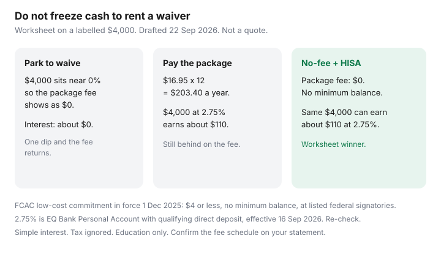

Personal Finance · Canada
How to Waive or Escape Canadian Bank Package Fees Without Keeping Dead Money Parked
A “free” chequing package that requires several thousand dollars sitting still is not free. The monthly fee disappears from the statement, and the cash that bought the waiver earns roughly nothing while a no-fee account would have let that money sit in a HISA. Middle-aged households do this for years because the branch called it a relationship and moving payroll felt risky. The decision is smaller than a mortgage: waive the fee with no minimum, downgrade to a low-cost account, or leave.
This is a waive-or-leave framework. It is not a ranking of bank products and not a promise that retention will say yes. Figures below are a labelled worksheet plus public FCAC rules used 22 Sep 2026. Your fee schedule governs.
Disclosure: No-fee chequing accounts and HISA parking accounts are offer types. Saving Optimizer may later add partner links. We do not currently claim bank or fintech partnerships, and we do not invent live switch bonuses. This is education, not deposit advice. Confirm fees, waivers, and CDIC membership with the institution.
Key takeaways
- Print three months of statements. Write the package fee, the balance that waives it, every extra charge, and whether payroll and Interac e-Transfer actually need this account.
- A labelled $4,000 parked at 0% to avoid a $16.95 monthly fee saves the fee and earns nothing. The same $4,000 in a no-fee account at an everyday 2.75% HISA earns about $110 a year and skips the fee.
- FCAC’s modernized low-cost commitment, in force 1 December 2025, is a public offer of $4 or less a month, no minimum balance, with at least 18 debit transactions. Ask for that account by name. It is not every credit union’s product.
- Call retention with a written ask: 12-month waiver with no minimum, or a downgrade to the low-cost account. Get a reference number. Check the next two billing cycles.
- If they refuse, switch with overlap. Open first, move payroll, rewrite PADs, then close. The 14-day plan is the sequence; this page is the fee decision that starts it.
Map every package fee, minimum balance, and waivers on your last 3 statements
Download the PDF, not the app tile. On each of the last three months, highlight:
- The monthly package name and the dollar fee, including months it was “rebated.”
- The minimum daily or monthly balance that would have waived it, and the lowest balance you actually held.
- Interac e-Transfer, extra debit, paper statement, draft, and non-network ATM lines.
- NSF or overdraft lines. The federal NSF cap of $10 on personal deposit accounts at federally regulated banks has been in force since 12 March 2026. A biller’s returned-payment charge is separate. Design details are in NSF and overdraft.
- Payroll deposits, government deposits (CRA, CCB, GST/HST credit), rent, insurance, and the credit-card PAD. Those are the items a switch must not bounce.
Add the three package fees. If the waiver only held because you left $4,000 or $5,000 idle, circle that balance. That circle is the dead money. It is not an emergency fund until it lives in an account you can name “emergency” and that pays an everyday rate. Parking choices are in where to park an emergency fund.
| Choice | What happens to $4,000 | Fee | Interest sketch |
|---|---|---|---|
| Park the waiver balance | Sits in package chequing near 0% | $0 if you never dip under the line | About $0. One dip and the monthly fee returns. |
| Pay the package and earn a HISA rate | Moved to an everyday HISA at 2.75% | $16.95 × 12 = $203.40 | About $110 interest, so you are still behind by roughly $93 before tax on the interest. |
| No-fee account, same HISA | Spending float separate from the $4,000 | $0 | About $110, and the $203.40 fee is gone. This is the one that wins on the worksheet. |
$16.95 is an illustration this site already uses for a package you never waive. Your booklet may say $4, $12.95, $16.95, or $30. Do the same three rows with your numbers. Simple interest, no compounding, tax ignored on purpose so the fee is visible.

Call retention with a written ask: waive, downgrade, or switch to no-fee
Phone the number on the statement, or use secure message so the ask is in the file. Read this, then stop talking:
“I am reviewing the monthly package fee. I can move payroll to a no-fee account. Please do one of the following and confirm it in writing today: waive the package fee for 12 months with no minimum balance, or move this account to your low-cost account under the FCAC commitment, $4 or less a month, no minimum balance. If neither is available, say so and I will start a switch.”
Write down the agent’s name, the date, and the reference number. A verbal “we’ll take care of it” that is not on the next statement did not happen. Do not accept a waiver that still requires the old minimum. That is the same dead money with a friendlier word.
The consumer page on Canada.ca (used 22 Sep 2026) says all Canadians can get an account at $4 or less from institutions in the commitment, and those low-cost accounts cannot require a minimum balance. The industry commitment, effective 1 December 2025, sets that $4 ceiling and a minimum of 18 debit transactions a month, including room for electronic transfers such as Interac e-Transfer. Fourteen federally regulated institutions, including the six largest banks, signed. Staff are supposed to know the product and display it in branch and online. If the first agent has not heard of it, ask for the low-cost account by that name and for a supervisor. A $4 account that is missing e-Transfer or has a balance hurdle may be a cheap package that is not the commitment account. Read the feature list.
No-cost ($0) accounts under the same commitment are for specific groups, not for every client who asks nicely. Newcomers in their first year are part of the public design. Each signatory also offers $0 to at least one further group — the public list includes Indigenous peoples, recipients of specified social-assistance programs, and disability tax credit recipients or a supporting family member. Your bank chooses which additional group it covers. Bring the document they ask for. Do not assume every branch waives the fee for every group.
No-fee chequing stacks that still keep e-Transfer and payroll
If retention refuses, the replacement is a no-fee deposit account plus a named HISA, not a new package with a different logo. Test four jobs before you move a cent of payroll:
- Payroll and CRA direct deposit land, and you can see them the same day they are sent.
- Interac e-Transfer in and out, including the rent or the parent you pay every month.
- Bill pay and PADs for the card, the insurer, and the city. Send a $1 test payment before you rely on it.
- Cash at an ATM you will actually use. The Simplii, Tangerine, and EQ stack is the map: CIBC ATMs, Scotiabank ABMs, or ATM rebates. Pick the network you use, not the bonus tile.
Move the old waiver balance into the HISA the week payroll has landed twice at the new account. Until then it is your overlap cushion, which is the point of the next section. CDIC covers eligible deposits at member institutions up to $100,000 per category, per member. EQ Bank and Equitable Bank share one member. A no-fee chequing account and a HISA at the same member in the same category do not double that cap.
When a Big-5 package is still worth it (mortgage, branch, business)
Leave the package in place when you use a feature a no-fee account will not replace this month:
- You need branch drafts or a certified cheque on a known date (a home closing, a car from a private seller) and you have priced that against a one-off draft fee at a credit union or a remaining branch account.
- A safety-deposit box you still open, and the package is the only way that box is included. Price the box alone. If the box is $60 a year and the package is $200, the package is not “for the box.”
- A personal package that is genuinely bundled with a mortgage or HELOC and you have read the all-in cost. This page does not shop mortgage rates. A waived $17 fee does not justify a higher rate on a six-figure loan. If you cannot see the trade on one sheet, ignore the bundle slogan.
- A business operating account. That is a different tariff. Do not close it because a personal-package article told you to.
- Identity verification failed at the digital bank (some newcomers hit this). Keep the branch account, book the video or in-person alternative, and put a date on the calendar to retry. Temporary is fine. Permanent by inertia is how the fee survives.
A household that never visits the branch, never needs a draft, and holds $4,000 idle to stay “premium” is paying for a lobby it does not enter.
30-day switch checklist without bouncing bills
Fourteen days starts the switch. Thirty days, covering two statement dates, finishes it. FCAC’s order still applies: new products before you cancel the old ones. Use the 14-day fee escape plan for payroll forms and registered transfers. The fee-specific list is:
| Window | Do this | Leave this alone |
|---|---|---|
| Day 0 | Written waive-or-downgrade ask. Reference number. | Do not move payroll on a maybe. |
| Days 1–3 if they refuse | Open the no-fee account. Fund a cushion. $1 test bill. $10 e-Transfer to yourself. | Do not drain the old account. |
| Next payroll cycle | HR direct-deposit form. CRA My Account direct deposit for refunds and benefits you actually receive. | Government deposits can take a cycle. Keep the old account open. |
| Days 7–21 | Rewrite each PAD. Watch both accounts on the morning the largest bill hits. | Do not cancel the old card until the new debit card is in your hand. |
| Day 30, after two clean cycles | Move the old waiver balance to the HISA. Close at $0. Ask for written confirmation. | Registered accounts transfer on their own clock (often 7–12 business days). Do not force them through e-Transfer. |
Confirm the waiver sticks for 2 billing cycles
A waiver that is real shows up as a $0 package line, or as a different account name, on the next statement and the one after that. Put both statement dates in the calendar the day you hang up. If the fee returns, call the same week with the reference number and ask for a reversal of the charge that contradicted the written waive. Screenshot both statements.
If you downgraded, confirm the low-cost features you were promised: no minimum, the debit count, e-Transfer, and digital statements. A downgrade that quietly dropped Interac and then charged per transfer is a new fee with an old logo.
Two cycles is also how you catch a PAD that still hits the old account. Overlap is cheaper than an NSF, even at the $10 cap, because the landlord’s fee is not capped by the bank rule.
Sources & date stamps
- FCAC / Canada.ca, Bank accounts and Low-cost and no-cost accounts — $4 or less, no minimum balance, features that must be included (used 22 Sep 2026).
- FCAC, Commitment on Low-Cost and No-Cost Accounts — effective 1 December 2025; $4 ceiling; minimum debit transactions; no minimum balance.
- FCAC news, 2025 — fourteen federally regulated signatories, including the six largest banks; more groups eligible for $0 accounts. Confirm which group your bank covers.
- Saving Optimizer, NSF guide — $10 NSF cap from 12 March 2026 on personal deposit accounts at federally regulated banks.
- Saving Optimizer, HISA guide — EQ Bank Personal Account 2.75% with qualifying direct deposit, rates page effective 16 Sep 2026. Re-check live. The $16.95 and $4,000 rows are a worksheet, not a tariff.
Frequently asked questions
Is parking $4,000 to waive a chequing fee a good deal?
Only if you have no no-fee alternative. On the labelled worksheet, $4,000 at 0% saves a $16.95 monthly fee and earns nothing. The same cash in a no-fee setup at a 2.75% everyday rate earns about $110 and still pays no package fee. Use your own fee and your own waiver balance.
What is the FCAC low-cost account?
A public commitment, in force 1 December 2025, by listed federally regulated institutions. The consumer page says Canadians can get an account at $4 or less a month with no minimum balance and a set of basic transactions, including at least 18 debits. It is not a statute that every credit union must copy. Ask for it by name and read the feature list.
Will the bank waive the fee if I threaten to leave?
Sometimes, for a period, and sometimes not. Ask in writing for a 12-month waiver with no minimum balance, or a downgrade to the low-cost account. Keep the reference number and check two statements. If the answer is no, switch with overlap instead of repeating the call.
Can I keep my mortgage at the big bank and move chequing?
Usually the loan stays where it is while deposits move. Confirm the PAD for the mortgage payment is rewritten before you close the old chequing account. This page does not compare mortgage rates. A small monthly fee waiver is not a reason to accept a worse rate.
How long should I keep the old account open?
Until two billing cycles have cleared on the new account and every PAD you listed has hit the new account once. Thirty days is a practical minimum when bills are monthly. Close at a zero balance and ask for written confirmation.